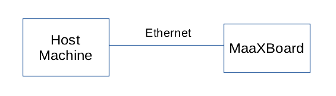
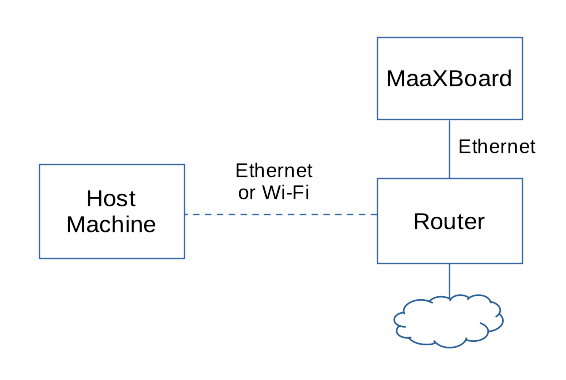

Bootloader
Loading the Application
After U-Boot has configured the MaaXBoard's memory and devices, it is able to load an application into RAM and then execute it. It is possible for a user to do this interactively using U-Boot commands via the serial terminal on the host machine. It is also possible and convenient to provide a U-Boot configuration file uEnv.txt that runs automatically; both options are documented below.
Methods of Loading
We cover three primary mechanisms for loading the application into RAM by U-Boot:
- from SD card;
- from USB flash drive;
- via TFTP.
Additional mechanisms are available, such as downloading over the serial cable; however, this would be much slower compared with the options above and is not considered further here. Downloading from on-board flash memory is another possible mechanism, but that is not applicable to the MaaXBoard.
The remainder of this section assumes that you have an application in the form of an executable ELF file called sel4_image. We will create this as our test application later in this documentation, but this section is concerned with the loading mechanisms rather than the executable itself.
Loading from SD Card
The SD card is used to store the bootloader, U-Boot. The SD card may also be used to store the application's ELF file that is to be loaded into RAM by the bootloader. If the SD card is partitioned as described in the Bootloader setup section, the BOOT partition is used for this by placing the sel4_image file in the root of the partition.
An advantage of this approach is that it makes use of a single medium that (a) is already being used to store U-Boot and (b) generally has a much larger capacity than is required by U-Boot alone.
A disadvantage is that while U-Boot is likely to be a relatively unchanging artefact (once it has been configured for a particular board), during development the application is likely to be modified repeatedly, and removing, reprogramming, and replacing the SD card is inconvenient and physically stresses the card and its mountings.
Loading from USB Flash Drive
The MaaXBoard has two USB 3.0 connectors that U-Boot is able to access, so the application file may be stored on a removable USB flash drive (i.e. thumb/pen drive) and loaded into RAM by U-Boot. To load the sel4_image binary from a USB flash drive the file needs to be placed in the root of a FAT formatted drive.
Compared with loading from SD card, this approach has the advantage of leaving the SD card and its U-Boot image undisturbed, although it still involves physical insertion and removal of the flash drive on both the development board and the host machine whenever a new version is to be tested.
Loading via TFTP
The MaaXBoard has an Ethernet port that U-Boot is able to access, and the application file may be downloaded from the host machine over TFTP (Trivial File Transfer Protocol), a convenient and popular method for booting.
Connection options include either a direct wired Ethernet connection between the host machine and the MaaXBoard:

Or a network connection via a hub / router:

Loading via TFTP is considered to be the most convenient method within an application development environment as there is no need to keep plugging and unplugging anything from the board. To load the sel4_image binary via TFTP, the file needs to be made available for download from the TFTP server.
Below are the instructions for setting up TFTP on linux.
Setting up a netboot server using TFTP
- Dnsmasq is the application used to provide a network infrastructure. The program can be installed using your provided package manager (for Debian, this would be
apt).
sudo apt install dnsmasq
-
Create the root folder where the image will be stored. In this example, the path will be
/var/lib/tftpboot. -
Identify the ethernet interface you will be connecting the board to using
ip addrcommand from the terminal.
$ ip addr
1. eno2: <BROADCAST,MULTICAST,UP,LOWER_UP> mtu 1500 qdisc mq state UP gruop default qlen 1000
link/ether [IPv4 ADDRESS] brd ff:ff:ff:ff:ff:ff
altname enp2s0
inet 10.0.0.253/24 scope global eno2
valid_lft forever preferred_lft forever
inet6 [IPv6 ADDRESS] scope link
valid_lft forever preferred_lft forever
From this command, the necessary information is the mac address of the interface (01:23:45:67:89:0a in this case), and the inet address (10.0.0.253).
- Edit the file
/etc/dnsmasq.confwith the output of the ip addr command. The dnsmasq.conf file takes this format:
interface=<interface_name>
dhcp-range=<start_ip>,<end_ip>,<lease_time>
dhcp-host=<mac_address>,<hostname>,infinite
dhcp-boot=<image_name>
enable-tftp
tftp-root=<root_folder>
- interface -> Specifies which network interface dnsmasq will listen on for DHCP and TFTP requests
- dhcp-range -> Defines the range of IP addresses that dnsmasq can allocate to devices on the network via DHCP.
- dhcp-host -> Maps a specific MAC address to a hostname and optionally assigns a permanent IP address (infinite lease time)
- dhcp-boot -> Specifies the boot file that should be served to clients requesting a network boot via TFTP
- enable-tftp -> Enables the TFTP (Trivial File Transfer Protocol) server functionality within dnsmasq.
- tftp-root -> Specifies the directory where the TFTP server will look for files to serve.
For the output listed in step 3, the file will look like this:
interface=eno2
dhcp-range=10.0.0.101,10.0.0.200,12h
dhcp-host=01:23:45:67:89:0a,svr1,infinite
dhcp-boot=sel4_image
enable-tftp
tftp-root=/var/lib/tftpboot
- With the setup complete for dnsmasq, the service can be started and enabled. To ensure the service has properly started, the
statuscommand can be used.
systemctl start dnsmasq
systemctl enable dnsmasq
systemctl status dnsmasq
If, at any point, any of the configuration files need to be changed, the service will need to be restarted with systemctl restart dnsmasq to see these changes reflected.
- If a firewall is enabled, rules will need to be added to allow requests to pass to the dnsmasq server. The following commands will permit requests:
iptables -A INPUT -i eno2 --dport 69 -j ACCEPT
iptables -A INPUT -i eno2 -p tcp --dport 67:68 -j accept
-
The board is now ready to use the tftp server. The bootloader will try to boot using
sel4_imagestored in/var/lib/tftpboot. -
If an error occurs and U-Boot drops to a prompt, the image can still be booted using U-Boot commands. Using
bootp sel4_imagewill load the file to a memory address (usually40480000), where it can then be booted usingbootelf 40480000. This method can also be used to boot different images. By usingbootp, any file contained within/var/lib/tftpbootcan be loaded and then booted.
u-boot=> bootp sel4_image
BOOTP broadcast 1
DHCP client bound to address 10.0.0.115 (6ms)
Using ethernet@30be0000 device
TFTP from server 10.0.0.253 our IP address is 10.0.0.115
Filename 'sel4_image'.
Load address 0x40480000
Loading: ###############################################################################
###############################################################################
###############################################################################
###############################################################################
###############################################################################
###############################################################################
###############################################################################
###############################################################################
###############################################################################
###############################################################################
###########################################################################
11.9 MiB/s
done
Bytes transferred = 15217072 (e831b0)
u-boot=> bootelf 40480000
U-Boot Configuration File
Booting via U-Boot can be configured via commands stored in a file named uEnv.txt and placed in the BOOT partition of the SD card.
The example file below (stored on the SD card prepared via the instructions in the Bootloader Setup section) automatically searches for, loads and then executes the binary file named sel4_image. The following potential locations for the sel4_image are searched in order:
- USB flash drive with a FAT filesystem.
- SD Card / eMMC device with a FAT filesystem.
- TFTP server.
### Uncomment and define the 'ipaddr' and 'netmask' variables to statically set
### the device IP address. If no static IP address is provided one will attempt to
### assigned using DHCP / BOOTP.
### ipaddr=192.168.100.50
### netmask=255.255.255.0
### Uncomment and define the 'serverip' address to set the IP address of the
### TFTP server. If no server IP address is defined then no attempt to boot
### from TFTP will be made.
serverip=192.168.0.11
### Define the name of the ELF binary to boot.
elf_binary_file=sel4_image
### Attempt to boot the ELF binary. The following locations will be searched in
### priority order:
### 1. USB mass storage devices with a FAT filesystem.
### 2. SD Card / eMMC devices with a FAT filesystem.
### 3. TFTP server.
elf_dev_boot=if ${devtype} dev ${devnum}; then echo Booting ELF binary from ${devtype} ${devnum} ...; fatload ${devtype} ${devnum} ${loadaddr} ${elf_binary_file}; bootelf ${loadaddr}; fi
elf_tftp_boot_0=if test -n ${serverip}; then run elf_tftp_boot_1; else echo Skipping booting ELF binary from TFTP, serverip not defined; fi
elf_tftp_boot_1=if test -n ${ipaddr}; then echo Using statically defined IP address; else echo Setting IP address from DHCP / BOOTP; setenv autoload no; dhcp; fi; run elf_tftp_boot_2
elf_tftp_boot_2=echo Booting ELF binary from TFTP ...; tftp ${loadaddr} ${elf_binary_file}; bootelf ${loadaddr}
uenvcmd=usb start; for devtype in usb mmc; do for devnum in 0 1; do run elf_dev_boot; done; done; run elf_tftp_boot_0
Some configuration of the uEnv.txt file is required, e.g. to set IP addresses relevant to the user's network. This is covered in more detail in the Bootloader Setup and First Boot sections.